operanthouseのヘッダー
Kitaya lab
電子回路の作製２
赤外線LED(ノーズポーク検出用)の配線
赤外線LEDの配線を行います。
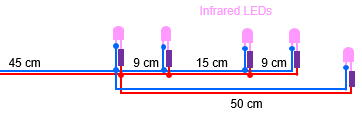
銅線と陽極(足の長い方)を470Ωの抵抗に繋いだ赤外線LED(5個)を用意します。
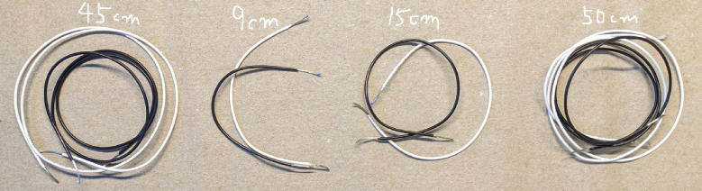
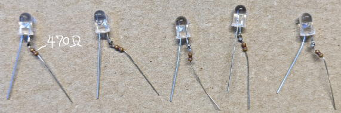
このLEDを配線しましょう。
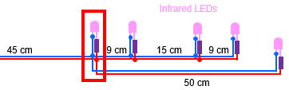
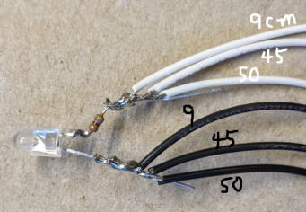
熱収縮チューブを付けます。

次はこのLEDを繋ぎます。
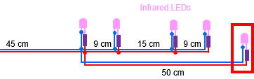

↓
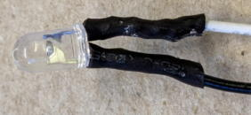
次の配線はハンダ付けする前に熱収縮チューブを忘れず入れてください。
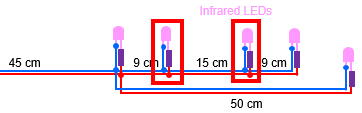
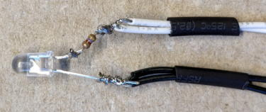
↓
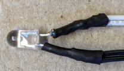
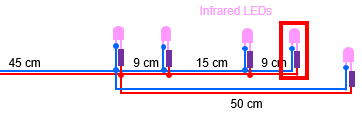

↓
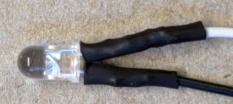
最後にスイッチ基盤にハンダ付けします。
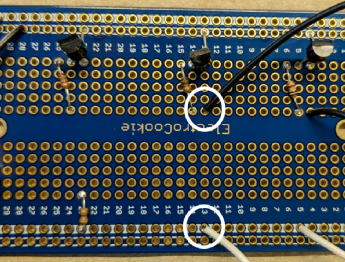
緑LED（報酬手掛り用）の配線
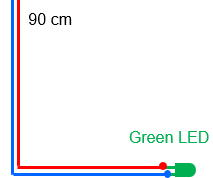
LEDを90cmの導線にハンダ付けします。
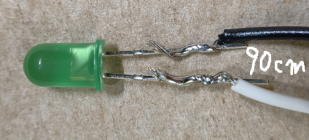
80度程度足を曲げます。
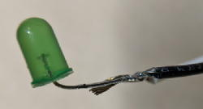
このLEDには水が掛かる可能性があるため錆び止めとしてセメダイン等のエポキシ系接着剤で露出した金属部分をコートします。
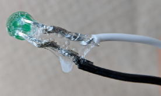
スイッチ基盤にハンダ付けします。
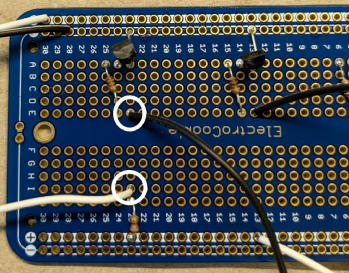
サーボケーブルの取り付け（給水アームへの接続用）
サーボ接続用の配線を製作します。
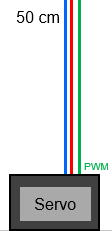
もしケーブルが50cmより短い場合は延長します。
オスコネクタは不要なので切り落とします。
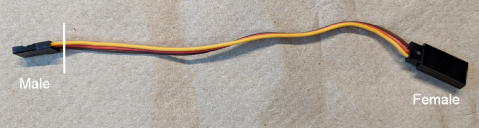
もしケーブルが50cmより短い場合は写真のように延長します。
ケーブルの延長のコツ
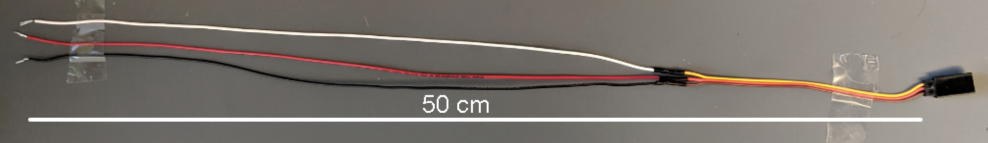
スイッチ基盤にハンダ付けします。
サーボケーブルは3本ありますが、2本は電源で1本はシグナル（PWM信号）を伝えるケーブルです。
どの色がどのラインかはデータシートやネットで型番を検索して調べて下さい。
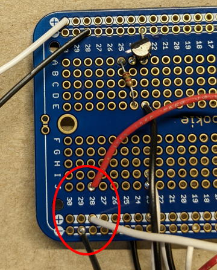
基盤の上下のプラス、マイナスラインは分離しているのでギャップをハンダで繋げます（上手く繋がらない場合はハンダを沢山盛ってください）。
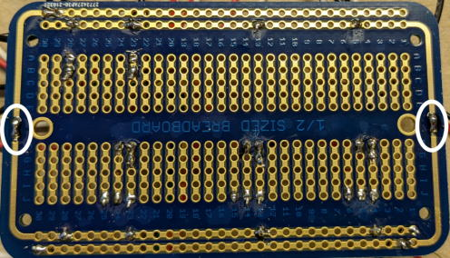
Arduinoへの接続ケーブルの取り付け
Arduinoへ接続するためのジャンプワイヤーの配線を行います。
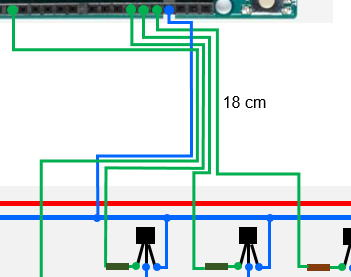
オスコネクタの付いたジャンプワイヤーを用意します（5本）。
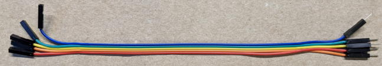
メスコネクタは不要なので除去します。
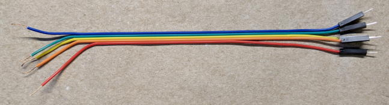
それぞれの位置にハンダ付けします。
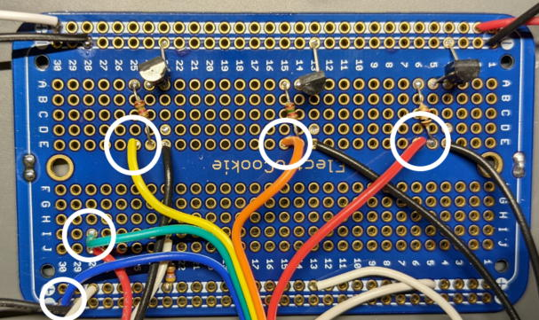
換気ファンの取り付け
チャンバーを換気するファンの配線を行います。
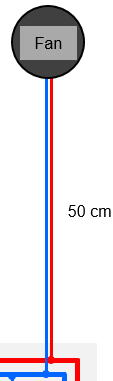
直径4cmのファンを使用します。
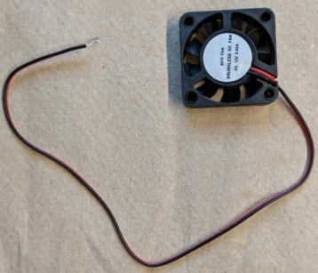
ケーブルの長さは足りないと思うので50cmに延長します。
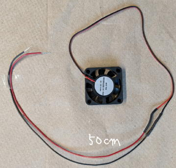
電源ラインにハンダ付けします。
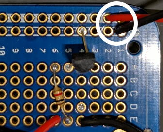
最後に基盤の裏側に切り残した銅線や銅線の繊維の付着がないかチェックしてください。
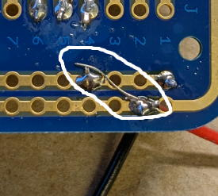
配線はこれで完成です。このようになっていますでしょうか。
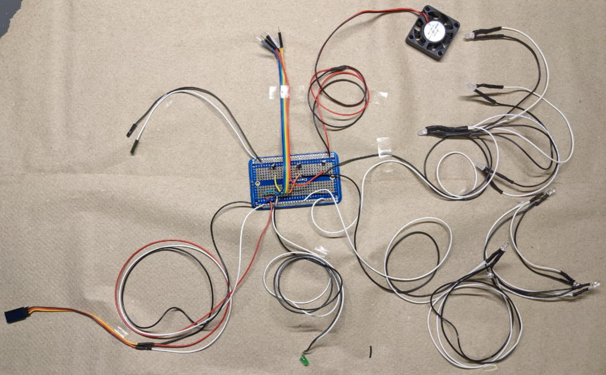